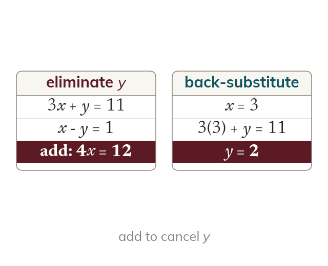

Elimination
Elimination adds or subtracts the equations so that one variable cancels. The value found is substituted back to find the other.
Elimination adds or subtracts the two equations so that one variable cancels, leaving a single equation in the other variable. Once that value is found, it is substituted back to find the second.